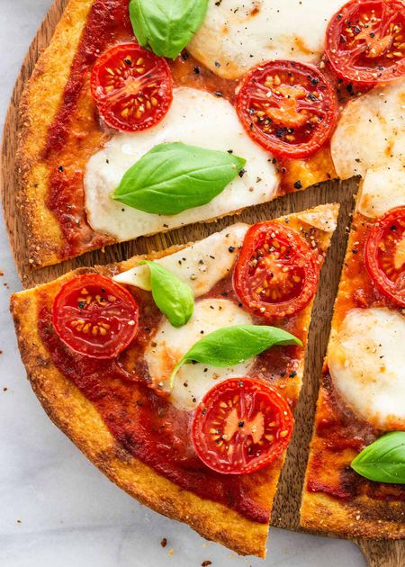

Homemade pizza
 1
1 30 minutes
30 minutes Salty
Salty

Preheat the oven to 220°C. Line 2 large baking sheets with parchment paper.
1ball of Mozzarella di Buffala
Slice the mozzarella and rest on kitchen paper.
½zucchini, sliced1onion, chopped
In a pan, fry the onions and reserve. Fry the zucchini slices in olive oil, reserve.
1 canpassata1 clovegarlic, diced1 pinchsalt- oregano, basil
In a saucepan, fry the garlic for 2 minutes. Add the herbs and the passata, cook at medium heat. Add the salt and reserve.
2veggie-based pizza crusts (e.g. cauliflower)1bell pepper, sliced lenghtwise- parmesan
Place the crusts on the baking trusts and cover with the base. Add the pepper and zucchini. Add the mozzarella and cover with parmesan.
Bake for about 10 minutes.